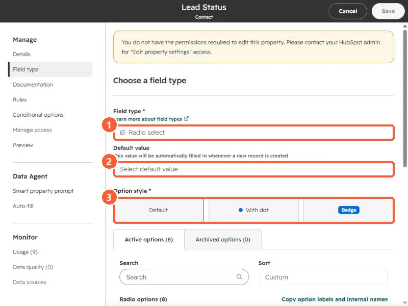
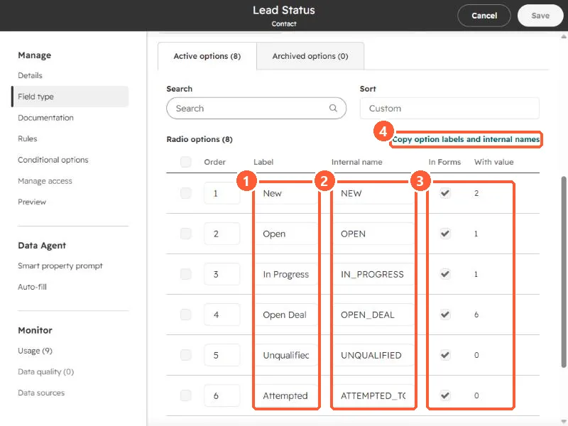

Short answer
Open the property, click Field type, and scroll to the options table. Each option has a Label (what users see, such as Open Deal) and an Internal name (such as OPEN_DEAL). HubSpot says the internal name is what APIs and integrations use. For imports, values must match either the label or the internal value. The table also shows whether each option appears in forms and how many records have it, and Copy option labels and internal names copies the full list.
1. The field type section
Open a dropdown or radio property from Properties and click Field type. I am using Lead Status, a radio select property.


- Default value. HubSpot says this fills automatically whenever a new record is created. Leave it empty unless every new record really should start with that value.
- Option style. Default, with a dot, or as a badge. This is display only.
2. The options table
Scroll down to the options. There are tabs for Active options (8 here) and Archived options.


- Label. What users see: New, Open, In Progress, Open Deal.
- Internal name. NEW, OPEN, IN_PROGRESS, OPEN_DEAL. HubSpot says the internal name is generated from the label and is the name used by APIs and integrations.
- In Forms and With value. Whether the option shows in forms (contact properties only), and how many records have it. Open Deal is on 6 records in my demo, Unqualified on none.
- Copy option labels and internal names copies the pairs for a mapping sheet.
3. Where the difference bites
- Imports. HubSpot says values in your file must match either the label or the internal value of an option. For multiple checkboxes, separate values with a semicolon and no spaces.
- Integrations and scripts. Send the internal name. If you rename a label later, the internal name does not have to change, so a mapping built on labels can break while one built on internal names keeps working.
- Limits. HubSpot caps an enumeration property at 5,000 options or 512,000 bytes, and 3,000 characters per option.